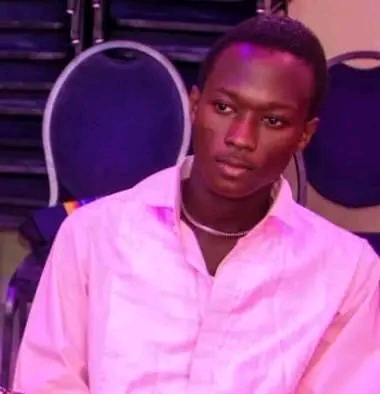

.jpeg)

I-Etat Civil
- Nom: FATON
- Prénoms: Vladimir Seun
- Age: 18
- Sexe: M
- Situation Matrimoniale: Célibataire sans enfant
- Contact: 0163471499/0147611499
- Email: Vladimirfaton@gmail.com

II-Mes Diplomes
- Certificat d'étude pimaire: 2016-2017
- Brevet d'étude du premier cycle: 2020-2021
- Baccalauréat: 2023-2024
- Licence1
III-Description de ma personnalité
Je suis quelqu’un de passionné, surtout quand il s'agit de mangas et de séries. Mon univers, c’est celui des héros, des histoires épiques et des rebondissements inattendus. J’aime me plonger dans des mondes imaginaires, là où les émotions sont intenses et les personnages inoubliables. Chaque nouvel anime ou série est pour moi une aventure, une porte vers un nouvel univers que j’explore avec enthousiasme. Je suis aussi du genre à débattre pendant des heures sur un arc narratif, une scène culte ou une théorie farfelue. Calme en apparence, j’ai pourtant une imagination débordante. Je suis curieux, toujours à la recherche de nouveautés, que ce soit dans l’animation japonaise ou les dernières séries à succès. Loyal envers mes proches, j’aime partager mes coups de cœur et faire découvrir mes univers préférés. En somme, je suis un passionné qui vit ses histoires préférées à fond, toujours prêt à en discuter autour d’un bon café ou d’un épisode.